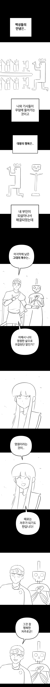
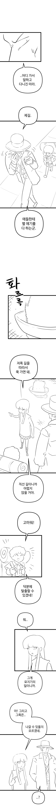
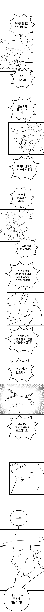
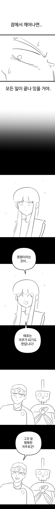
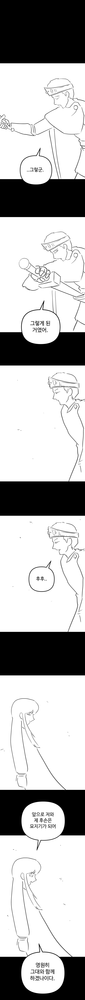
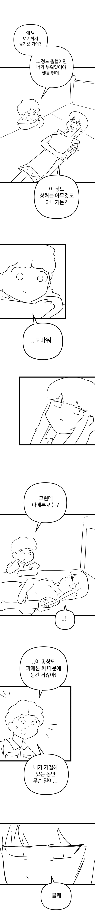
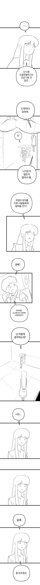
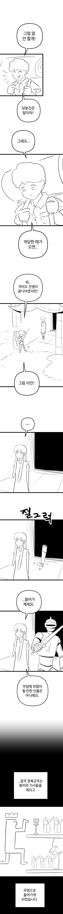
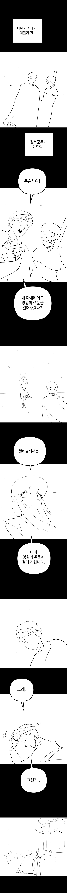
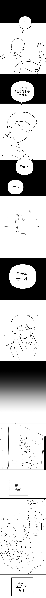
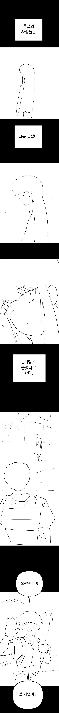
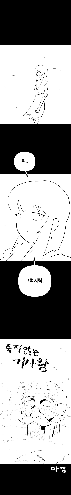
단편만화는 여기에 모아둠 >

https://comic.naver.com/challenge/list?titleId=857184
협업할 그림작가 상시 모집 중!!
장편 단편 안 가리고
관심 있으면 메일(sonhunmin7@naver.com)이나 인스타 DM(인스타주소)으로 연락주세용
댓글
수집 당시 댓글 17개
가면군 · 11.27 17:12:35
카갤러1 · 11.27 17:20:20
링힌 · 11.27 18:48:03
기븐 · 11.27 19:04:47
피타라텔레스 · 11.27 22:10:57
카갤러2 · 11.28 00:51:45
히이잉 · 11.28 08:41:10
ㅇㅇ · 11.28 08:47:01
히이잉 · 11.28 09:03:13
ㅇㅇ · 11.28 09:05:40
ㅇㅇ · 11.28 09:31:41
ㅇㅇ · 11.28 10:12:41
히이잉 · 11.28 10:29:15
ㅇㅇ · 11.28 10:41:17
ㅇㅇ · 11.28 14:53:58
ㅇㅇ · 11.28 19:59:13
ㅇㅇ · 11.28 20:07:19